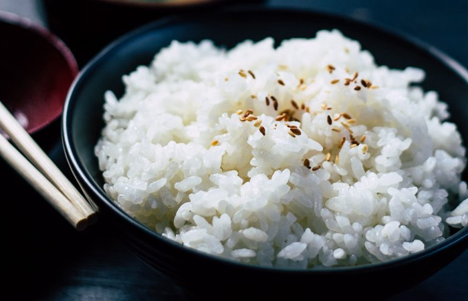

Reaproveite melhor os alimentos!
Receitas para economizar e ganhar saúde
Nossa receitas ajudam você a aproveitar melhor os alimentos, economizar,ganhar tempo e praticidade.
-

Tigela de abacate
Receita refrescante e cheia de vitaminas para seu café da manhã.
-

Salada de kiwi
Receita refrescante e cheia de vitaminas para seu café da manhã
-

Mix de vegetais
Receita refrescante e cheia de vitaminas para seu café da manhã
-

Pimentões a juliana
Receita refrescante e cheia de vitaminas para seu café da manhã.
-

Prato oriental
Receita refrescante e cheia de vitaminas para seu café da manhã.
-

Beterrabas assadas
Receita refrescante e cheia de vitaminas para seu café da manhã.
Quem somos?
Conheça a comunidade por trás da iniciativa
-

Roberta
Conteúdo
-

Marcela
Chef de cozinha
-

Andréia
Pequena produtora